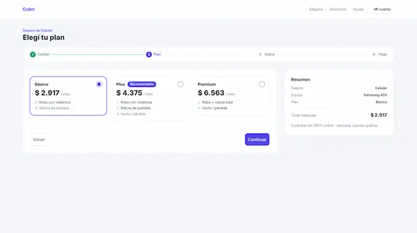
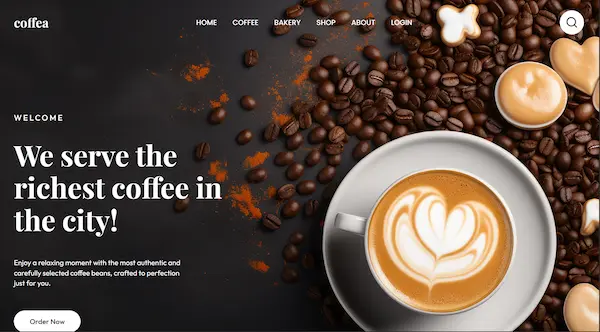
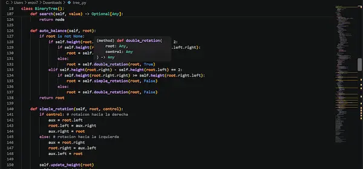

Diseño UX/UI
Organizo la información, dibujo wireframes y defino un sistema de diseño simple.
Disponible para pasantías y proyectos
Estudiante de Sistemas de Información y aspirante a UX/UI Designer Junior
Diseño interfaces ordenadas y las llevo a código con HTML y CSS, para que sean fáciles de usar desde cualquier pantalla.
Concepción del Uruguay, Entre Ríos, Argentina (UTC−3)
Organizo la información, dibujo wireframes y defino un sistema de diseño simple.
Maqueto páginas semánticas, responsive y accesibles, sin frameworks.
Resuelvo problemas con algoritmos y estructuras de datos, y versiono mi trabajo.

2026
Flujo de compra de 7 pantallas: cotizar, elegir plan, cargar datos, pagar (simulado) y recibir la póliza.
Aprendizaje: guardar todo el flujo en un único estado evita datos distintos entre pantallas.

2026
Maquetación fiel a un diseño de Figma, con carruseles que se frenan en cada tarjeta, sin JavaScript.
Aprendizaje: organizar el CSS en capas hace más fácil mantener estilos y tamaños de pantalla.

2026
Árbol binario que se balancea solo: inserta, borra, busca y recorre los datos de distintas formas.
Aprendizaje: las rotaciones mantienen el árbol parejo y la búsqueda rápida.
2023 hasta hoy
UADER, FCyT, sede Concepción del Uruguay
Curso breve
Santander Open Academy
Idiomas
Formación en idioma
Soy Enzo, estudiante de Sistemas de Información en Concepción del Uruguay. Me gusta que lo que diseño se entienda a primera vista y que funcione en cualquier pantalla. Estoy buscando mi primera experiencia en diseño de interfaces.
Planifico antes de empezar y dejo todo documentado.
Pruebo herramientas nuevas y busco mejorar en cada trabajo.
Escucho, pregunto y cuido el buen trato.